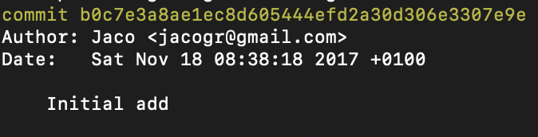

<!DOCTYPE html>
<html lang="en">

<head>
  <meta charset="utf-8" />
  <meta name="viewport" content="width=device-width, initial-scale=1.0, maximum-scale=1.0, user-scalable=no" />

  <title>The Evolution and Impact of Polkadot-JS</title>
  <link rel="icon" href="./../../assets/favicon.svg" />
  <link rel="shortcut icon" href="./../../assets/favicon.png" />
  <link rel="stylesheet" href="./../../dist/reset.css" />
  <link rel="stylesheet" href="./../../dist/reveal.css" />
  <link rel="stylesheet" href="./../.././assets/styles/PBA-theme.css" id="theme" />
  <link rel="stylesheet" href="./../../css/highlight/shades-of-purple.css" />

  <link rel="stylesheet" href="./../.././assets/styles/custom-classes.css" />

</head>

<body class="site">
  <header class="site-header">
    <!-- This logo is a link only on the watching server, not the production build -->
    <a href="">
      
    </a>
  </header>
  <main class="reveal">
    <article class="slides">
      <section  data-markdown><script type="text/template">

# The Origins and Evolution of Polkadot-JS
</script></section><section  data-markdown><script type="text/template">
## The Genesis Story

<pba-flex center>



- A personal side project before Polkadot existed
- Started when only the specification was available
- No actual blockchain to interact with initially
- Built on anticipation and vision

<aside class="notes"><p>Polkadot-JS began as a personal project by its core maintainer at a time when Polkadot itself was still just a specification on paper.</p>
<p>The developer started building the JavaScript implementation based purely on the specifications and their understanding of what would be needed for the future network. This forward-thinking approach allowed the tooling to evolve alongside the blockchain itself, rather than playing catch-up later.</p>
<p>This early start gave Polkadot-JS a unique advantage - it was able to grow and adapt organically with the protocol itself, incorporating feedback and adjusting to changes in real-time as the Polkadot vision materialized into working code.</p>
</pba-flex></aside></script></section><section  data-markdown><script type="text/template">
## The First Conversation with Gavin Wood

<pba-flex center>

"Cool, not sure how this fits in, but it helps the Polkadot ecosystem, so go on."

</pba-flex>
</script></section><section  data-markdown><script type="text/template">
## The Two Pillars of Polkadot-JS

<pba-flex center>

1. **Polkadot-JS API** – Core JavaScript/TypeScript interface
2. **Polkadot-JS UI** – Web-based interaction platform

</pba-flex>

<aside class="notes"><p>The Polkadot-JS ecosystem expanded to encompass three main components, each serving different but complementary purposes:</p>
<ol>
<li><p><strong>Polkadot-JS API</strong>: This is the core JavaScript/TypeScript interface for interacting with Substrate-based chains. It provides developers with the tools to query chain state, submit transactions, subscribe to events, and more. The API forms the foundation upon which other tools and applications are built.</p>
</li>
<li><p><strong>Polkadot-JS UI</strong> (also known as Polkadot-JS Apps): This web-based interface allows users to interact with Substrate-based chains through a graphical user interface. Originally intended as a developer tool, it evolved into a widely used application for managing accounts, transferring tokens, participating in governance, and performing various other on-chain actions.</p>
</li>
</ol>
</aside></script></section><section  data-markdown><script type="text/template">
## From Developer Tool to Community Platform

- Initially created as a reference implementation
- Unexpectedly became the primary user interface during PoC-1
- Early validators adopted it for operational needs
- Community-driven feature development began organically

<aside class="notes"><p>The Polkadot-JS UI was originally conceived as a simple developer tool - a reference implementation to demonstrate how the API could be used in a web application. However, during Polkadot&#39;s Proof of Concept 1 (PoC-1), it unexpectedly became the primary interface through which users interacted with the network.</p>
<p>Early validators, who needed tools to manage their operations, turned to the Polkadot-JS UI as their dashboard of choice. This organic adoption drove the expansion of the UI beyond its initial scope, with new features being added to support validator operations and network participation.</p>
<p>As the user base grew, community members began contributing features that addressed their specific workflows and needs. This community-driven development model helped the UI evolve from a simple reference implementation into a comprehensive platform for all aspects of network interaction.</p>
<p>This evolution exemplifies how open-source projects in the blockchain space often grow beyond their initial purposes, shaped by the needs and contributions of their communities rather than following a predetermined roadmap.</p>
</aside></script></section><section  data-markdown><script type="text/template">
## The Core Maintainer's Philosophy

<pba-flex center>

- API reliability takes highest priority
- Quick issue resolution to respect developer time
- Responsive to community needs and questions
- Balancing new features with stability

</pba-flex>

<aside class="notes"><p>The core maintainer of Polkadot-JS has operated with a clear set of priorities that have shaped the project&#39;s development:</p>
<p>First and foremost is the reliability of the API. Since developers rely on it daily to build their applications, ensuring its stability and correctness has always been the highest priority. Breaking changes are carefully managed and documented to minimize disruption to dependent projects.</p>
<p>Issue resolution is treated with urgency, particularly for bugs that block developer progress. The maintainer recognizes that each open issue potentially wastes the time of multiple developers across the ecosystem, creating a multiplier effect that justifies quick responses.</p>
<p>The maintainer has become known for being highly responsive to community needs and questions, often providing guidance and explanations that go beyond simple code fixes. This educational component has been crucial in building a knowledgeable developer community around Polkadot.</p>
<p>There&#39;s a constant balance between adding new features to support evolving use cases and maintaining the stability that existing applications depend on. This balancing act has informed many of the architectural decisions in the project&#39;s evolution.</p>
</aside></script></section><section  data-markdown><script type="text/template">
## Innovative Technical Features

### Dynamic UI from Metadata

<pba-flex center>

- UI automatically adapts to chain's runtime modules
- No pre-built support needed for new chains
- Enables seamless interaction with any Substrate chain
- Reflects runtime upgrades without UI changes

</pba-flex>

<aside class="notes"><p>One of the most innovative features of Polkadot-JS is how the UI dynamically adapts based on the metadata provided by the connected chain. This approach revolutionized how developers and users interact with Substrate-based chains.</p>
<p>When connected to any Substrate chain, the UI automatically detects the available modules, calls, storage items, and other runtime components through the chain&#39;s metadata. It then generates the appropriate forms and interfaces without requiring pre-built support for that specific chain.</p>
<p>This means that when a new chain like Edgeware is launched, users can immediately connect to it through Polkadot-JS UI and access all its functionality without waiting for updates to the UI. Similarly, when existing chains add new pallets or functionality through runtime upgrades, the UI automatically reflects these changes.</p>
<p>This dynamic capability significantly reduced the maintenance burden for both the Polkadot-JS team and the broader ecosystem. Instead of requiring UI updates for each new chain or runtime upgrade, the UI remains functional through its ability to interpret metadata on the fly.</p>
</aside></script></section><section  data-markdown><script type="text/template">
## Community Growth and Contributions

- Organic adoption by validators and developers
- Web3 Foundation bounties incentivized contributions
- Community members added specialized features
- Expansion from core functionality to ecosystem tools

<aside class="notes"><p>The growth of the Polkadot-JS ecosystem has been largely organic, driven by the needs of validators, developers, and other community members who adopted the tools for their daily operations.</p>
<p>To encourage broader participation, the Web3 Foundation began sponsoring bounties for Polkadot-JS issues, providing financial incentives for external contributors to address bugs, add features, and improve documentation. This program helped distribute the maintenance load and brought fresh perspectives to the project.</p>
<p>Community members have contributed specialized features that address specific use cases, such as enhanced validator tools, integration with hardware wallets, and improved UX for governance participation. These contributions have enriched the ecosystem beyond what the core team could have built alone.</p>
<p>The project has expanded from its core functionality (API, UI, Client) to encompass a broader ecosystem of tools and libraries that support various aspects of the Polkadot and Kusama networks. This expansion reflects the growing maturity and diversity of use cases within the ecosystem.</p>
</aside></script></section><section  data-markdown><script type="text/template">
## Integration with the Broader Ecosystem

- Browser extensions for wallet functionality
- Mobile application support
- Block explorer data providers
- Cross-chain communication enablers

<aside class="notes"><p>As Polkadot-JS matured, it began to integrate with and support a broader ecosystem of tools and applications:</p>
<p>Browser extensions like the Polkadot{.js} Extension provide wallet functionality, allowing users to manage their accounts and sign transactions securely across multiple websites without exposing their private keys. This extension has become a crucial piece of infrastructure for dApp developers in the ecosystem.</p>
<p>Mobile application support enables integration with tools like Parity Signer, allowing for secure offline signing of transactions using mobile devices. This integration enhances security by keeping private keys on air-gapped devices.</p>
<p>Polkadot-JS serves as a data provider for block explorers like Polkascan and Subscan, supplying them with decoded transaction data, event information, and account details that make blockchain data accessible to non-technical users.</p>
<p>Perhaps most importantly, Polkadot-JS supports the cross-chain communication capabilities that are central to Polkadot&#39;s vision. It provides interfaces for interacting with parachains, handling cross-chain message passing, and participating in the ecosystem&#39;s governance across multiple chains.</p>
</aside></script></section><section  data-markdown><script type="text/template">
## Vision Alignment with Polkadot

<pba-flex center>

- Enabling cross-chain communication
- Solving real-world problems, not just technical optimization
- Building for practical use cases
- Growing the ecosystem organically

</pba-flex>

<aside class="notes"><p>The development of Polkadot-JS has been guided by a vision that aligns closely with the broader goals of the Polkadot network itself:</p>
<p>A core focus has been enabling cross-chain communication, reflecting Polkadot&#39;s foundational goal of allowing different blockchains like Bitcoin, Ethereum, and others to interact seamlessly. Polkadot-JS provides the interfaces through which developers and users can leverage these cross-chain capabilities.</p>
<p>The maintainer has emphasized solving real-world problems rather than just optimizing blockchain parameters. This practical approach has led to tools that address actual user needs rather than theoretical improvements.</p>
<p>The project has prioritized building for practical use cases, with features driven by the requirements of validators, developers, and other ecosystem participants rather than abstract technical goals.</p>
<p>Finally, the organic growth of the ecosystem has been embraced, with community contributions welcomed and incorporated to create a more diverse and robust toolset than could have been achieved through centralized planning alone.</p>
</aside></script></section><section  data-markdown><script type="text/template"></script></section>
    </article>
  </main>

  <script src="./../../dist/reveal.js"></script>

  <script src="./../../plugin/markdown/markdown.js"></script>
  <script src="./../../plugin/highlight/highlight.js"></script>
  <script src="./../../plugin/zoom/zoom.js"></script>
  <script src="./../../plugin/notes/notes.js"></script>
  <script src="./../../plugin/math/math.js"></script>

  <script src="./../../assets/plugin/mermaid.js"></script>
  <script src="./../../assets/plugin/mermaid-theme.js"></script>

  <script src="./../../assets/plugin/chart/chart.js"></script>
  <script src="./../../assets/plugin/chart/chart.min.js"></script>

  <script src="./../../assets/plugin/tailwindcss.min.js"></script>

  <script>
    function extend() {
      var target = {};
      for (var i = 0; i < arguments.length; i++) {
        var source = arguments[i];
        for (var key in source) {
          if (source.hasOwnProperty(key)) {
            target[key] = source[key];
          }
        }
      }
      return target;
    }

    // default options to init reveal.js
    var defaultOptions = {
      controls: true,
      progress: true,
      history: true,
      center: true,
      transition: 'default', // none/fade/slide/convex/concave/zoom
      slideNumber: true,
      mermaid: {
        startOnLoad: false,
        logLevel: 3,
        theme: 'base',
        themeVariables: {
          primaryColor: purple,
          primaryTextColor: white,
          primaryBorderColor: pink,
          lineColor: pink,
          secondaryColor: lightPurple,
          tertiaryColor: lightPurple,
        },
      },
      chart: {
        defaults: {
          color: 'lightgray', // color of labels
          scale: {
            beginAtZero: true,
            ticks: { stepSize: 1 },
            grid: { color: "lightgray" }, // color of grid lines
          },
        },
        line: { borderColor: ["#ccc", "#E6007A", "#6D3AEE"], "borderDash": [[5, 10], [0, 0]] },
        bar: { backgroundColor: ["#ccc", "#E6007A", "#6D3AEE"] },
      },
      plugins: [
        RevealMarkdown,
        RevealHighlight,
        RevealZoom,
        RevealNotes,
        RevealMath,
        RevealMermaid,
        RevealChart
      ]
    };

    // options from URL query string
    var queryOptions = Reveal().getQueryHash() || {};

    var options = extend(defaultOptions, {"width":1400,"height":900,"margin":0,"minScale":0.2,"maxScale":2,"transition":"none","controls":true,"progress":true,"center":true,"slideNumber":true,"backgroundTransition":"fade"}, queryOptions);
  </script>


  <script>
    Reveal.initialize(options);
  </script>
</body>

</html>
